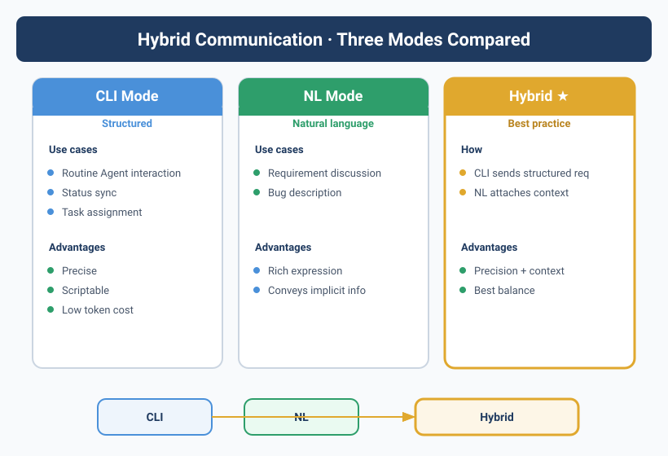

![Diagram showing the hybrid communication system, divided into CLI mode (structured), NL mode (natural language), and hybrid mode. CLI mode fits routine Agent interactions, status sync, task assignment, etc., with advantages like precision, scriptability, and low token cost. NL mode fits requirement discussions, bug descriptions, etc., with advantages like rich expression and transmissible implicit info. Hybrid mode is the best practice, implemented as CLI sending structured requests + NL attaching context explanations. The diagram is closely tied to the context, visually presenting the traits and use cases of the different modes.](../assets/diagrams/en_08_1.svg)
"Do it ASAP" almost took down the server
Yason said "do it ASAP," and three minutes later a database migration began.
Kai interpreted it as "right now, drop everything," and ran a migration script requiring table locks directly on production. There were still 200 active users online at the time.
When Yason found out, his hands were shaking. "When I said 'ASAP' I meant within the day, not this instant!"
This incident made Yason face a brutal fact: When you tell a human "ASAP," they combine it with context to judge "five minutes" versus "five hours." But an Agent won't — it takes things literally.
The ambiguity of natural language gets squared when communicating with Agents. You're not talking to a person — you're feeding a logic engine. It won't guess your subtext.
CLI vs. natural language: two roads, each its own
Yason later split all communication into two channels:
Precise commands (CLI):
yason → kai: --task deploy --env production --version v2.1.0 --dry-run
kai → yason: dry-run passed. 0 errors, 3 warnings. Deploy? [Y/n]
Open-ended communication (NL):
yason → kai: "Users say the login page often freezes — any idea why?"
kai → yason: "I checked today's error logs and found three possible causes..."
CLI's strength is zero ambiguity. Every command's parameters, options, and expected output are explicit. The downside? Writing one command line is slower than saying one sentence. And when you're discussing architecture with an Agent, you can't use CLI — that's not a command, it's a conversation.
Natural language's strength is flexibility. But every sentence can be understood three ways.
Yason's rule is simple:
Use CLI for what you want the Agent to do. Use natural language for what you discuss with the Agent. Mix the two and both sides break.
Cross-Agent communication protocol — turning "jargon" into "standard speak"
The communication problem isn't just between Yason and Agents. Agent-to-Agent communication is the real black hole.
The classic case: Kai changed an API locally and told Max "the user-auth API has been modified." Max interpreted it as "already deployed," and directly sent an external announcement. In reality Kai hadn't pushed, let alone deployed.
Where's the problem? Agents talk to each other in natural language, but natural language has no "status semantics."
"Modified" could mean three states:
- Local modification done (not committed)
- Branch pushed (not merged)
- Merged and deployed (live)
Three states, one sentence.
Yason's solution is a cross-Agent communication protocol, with just three core rules:
1. Task dispatch uses structured messages
# Cross-Agent task request standard format
from: Kai
to: Max
type: task_request
priority: P1
subject: "User auth API change notice"
payload:
change_type: api_modification
status: committed # proposed | in_progress | committed | deployed | rolled_back
branch: feature/auth-v3
commit_hash: a3f2e9c
breaking_change: false
expected_deploy: 2025-06-20T14:00:00Z
attachments:
- type: changelog
url: /memory/changes/2025-06-20-auth-v3.md
When Max receives such a message, it won't rush to announce. It only sees status: committed, so it knows it's not deployed yet. Once Kai changes status to deployed, Max acts.
2. Status sync uses a unified format
Yason defined a global status enum that all Agents must obey:
# /communication/status-protocol.yaml
status_definitions:
proposed: "Proposal submitted, awaiting approval"
approved: "Approved, ready to execute"
in_progress: "In progress — includes estimated completion time"
blocked: "Blocked — includes the reason and a suggested fix"
review: "Execution done, awaiting review"
committed: "Review passed, change committed but not yet deployed"
deployed: "Deployed to the target environment"
rolled_back: "Rolled back — includes the rollback reason"
cancelled: "Execution cancelled — includes the cancellation reason"
When reporting task status, every Agent must attach a status bit. "Done" is not allowed — you say "status: committed" or "status: deployed."
3. Exception notices use the emergency channel
Normal tasks go through the protocol stack. But one class of info must use the emergency channel — straight to Yason, bypassing any protocol parsing:
# Emergency channel config
emergency_channel:
triggers:
- production_outage
- security_breach
- data_loss
- api_key_exhausted
- cost_anomaly
format:
alert_level: CRITICAL | HIGH | MEDIUM
summary: "One-line description of the problem"
impact: "Scope of impact"
suggested_action: "Suggested way to handle it"
routing:
- target: yason
- bypass_all_agents: true
After this went live, cross-Agent communication error rate dropped from 40% to near zero. Not because the Agents got smarter, but because the ambiguity was eliminated entirely.
Agent group chat: when the group becomes a console
Yason initially allowed Agents to message each other freely. Then he witnessed an "AI argument":
Kai: This API design is unreasonable, should be changed.
Max: Users report no problem, no need to change.
Kai: You don't even write code, what do you know?
Max: I talk to users directly, of course I know.
Yason immediately revoked Agents' direct-messaging permission. From then on, all cross-Agent communication had to go through the shared knowledge base:
Kai finds a problem → writes to /memory/requests/request-001.yaml
Rex reads on a schedule → handles it within its own scope
Rex finishes → sets status to resolved
Kai on next sync → reads resolved status, knows the issue is handled
It's not that Agents can't converse — it's that async, structured, traceable communication fits Agent teams far better than instant chat.
The golden rules of communication
Yason recorded four rules in a Feishu doc; every new Agent reads them first on joining:
- Address the task, not the person — when giving an Agent a requirement, say "what" not "how." An Agent's execution is better than you think; it needs a goal, not instructions.
- One thing at a time — don't cram three tasks into one sentence. The Agent will do the last one and forget the first two. One task, one sentence — that sentence contains: what to do, why, and what counts as done.
- Clear acceptance criteria — "write an API" vs. "write an API: returns JSON, has 304 validation, has error handling, logs" are two different qualities of communication.
- Confirm receipt — after each instruction, wait for the Agent's confirmation reply before doing other things. This habit saved Yason countless "I thought you got it" mix-ups.
Industry standard: Google's A2A protocol
In April 2025, Google released the Agent-to-Agent (A2A) protocol v1.0[^1] and donated it to the Linux Foundation. Over 150 organizations (including Salesforce, SAP, Box, and others) announced support on launch day.
Why does A2A matter? Because it defines the industry standard for Agent-to-Agent communication:
A2A's core concepts
| Concept | Description | Yason's equivalent practice |
|---|---|---|
| Agent Card | The Agent's "ID card" — declares capabilities, identity, auth method | Similar to Yason's role declaration + permission config |
| Task | The basic unit of Agent-to-Agent communication — not a message, a task | Similar to Yason's cross-Agent request format |
| Artifact | The structured output of a task (code, docs, data) | Similar to files in the shared knowledge base |
| Push Notification | Real-time notification of task status changes | Similar to cron sync + status checks |
Yason's first reaction reading A2A: "I've written all of this myself, but Google turned it into a standard."
Signed Agent Cards
The A2A design Yason admires most is the Agent Card — each Agent publishes a JSON identity declaration containing its capabilities, I/O formats, and auth method:
{
"name": "Kai",
"capabilities": {
"skills": ["code_implementation", "testing", "refactoring"],
"models": ["deepseek-v4", "claude-sonnet-4"]
},
"authentication": {
"schemes": ["bearer_token", "mTLS"]
},
"rate_limits": {
"max_concurrent_tasks": 2,
"cost_per_hour": "$5"
}
}
The beauty of the Agent Card is discoverability — a master Agent can automatically learn a subordinate's capabilities by reading its Agent Card, without hand-writing it into the System Prompt.
A2A upgrades Agent communication from "homegrown protocol" to "industry standard." Yason's own cross-Agent message format closely matches A2A's core pattern, but A2A adds an ecosystem — different Agent frameworks, different models, different organizations can interoperate.
MCP and A2A aren't an either/or
A lot of people ask Yason the same question: "MCP (Model Context Protocol) and A2A — which should I pick?"
The answer: you need both.
These two protocols solve completely different problems:
MCP (vertical protocol) A2A (horizontal protocol)
│ │
Agent ──► Tool Agent ◄──► Agent
│ │
│ │
File system API Database Kai Rex Max
| Dimension | MCP | A2A |
|---|---|---|
| Direction | Vertical: Agent → Tool | Horizontal: Agent ↔ Agent |
| Protocol | JSON-RPC 2.0 | JSON-RPC + gRPC |
| Analogy | OS API | Network protocol |
| Problem solved | How an Agent uses tools | How Agents collaborate |
| Released by | Anthropic | |
| Ecosystem | Milvus, Cloudflare, CodeGate | Salesforce, SAP, Box |
Yason's analogy: MCP is the Agent's "OS system call," A2A is the Agent's "network protocol." Without OS calls, the Agent can't get data. Without a network protocol, Agents can't collaborate. The two don't conflict — they complement.
Don't fall into the "either/or" trap. Your Agent team needs MCP to access tools and data, and A2A to collaborate across Agents. Like your phone needing both OS APIs (to use the camera) and network protocols (to WeChat your friend) — they solve different layers.
Cross-Agent context compression
Chapter 5 covered a single Agent's context compression. In an Agent team there's an extra problem: cross-Agent context transfer.
When Kai hands a task off to Rex, Kai's "full context" (all intermediate steps, decision rationale, failed attempts) shouldn't all be passed to Rex — Rex doesn't need to know the three approaches Kai tried. Rex only needs the final state and the info relevant to the current task.
Yason added a context-compression field to the cross-Agent communication protocol:
# Cross-Agent context compression example
from: Kai
to: Rex
type: task_handoff
context_compression:
keep:
- "Current state: PR #142 committed, awaiting deployment"
- "Environment requirements: Node 20+, needs API key AUTH_SERVICE_KEY"
- "Risk note: this deploy will cause a ~30-second migration window"
discard:
- "The three failed approaches Kai tried during development"
- "Conversation history from intermediate code reviews"
- "Status of other tasks unrelated to this deployment"
This compression spec boosted cross-Agent communication efficiency by ~40% — the receiving Agent's context usage dropped from 85% to 55%.
Communication between Agents is like communication between people: don't dump your raw mind-map on the other party — only pass what they need to know.
Open-source Agent communication tools
Beyond protocol standards, Yason also recommends some directly usable open-source communication tools:
A2A SDKs
Google open-sourced a reference implementation SDK for A2A:
- A2A Python SDK: a complete Agent-to-Agent communication framework, including Agent Card registration, task routing, and Artifact transfer
- A2A JS SDK: the Node.js version, suited for frontend Agents or lightweight scenarios
Yason's take: "At least I don't have to write message serialization and deserialization myself."
Lightweight message queues
If you don't want the whole A2A stack, you can use lightweight message middleware for Agent communication:
| Tool | Type | Strength | Agent comms scenario |
|---|---|---|---|
| NATS | Message queue | Extremely lightweight, millisecond latency | Async task distribution between Agents |
| Redis Pub/Sub | Pub/Sub | Simplest to deploy, broadest ecosystem | Broadcast notifications, status sync |
| RabbitMQ | Message queue | Mature, stable, flexible routing | Complex task orchestration |
| NATS JetStream | Stream processing | Persistence + streaming, the beefed-up NATS | Cross-Agent requests needing reliable delivery |
Yason's path: single-node → Redis Pub/Sub; need persistence and reliable delivery → NATS JetStream; large-scale production → consider the A2A SDK.
Tools are a means, not an end. When your Agent team is only 3–5, a shared Git repo + Redis Pub/Sub is enough. Once you're at 10+, consider the A2A protocol or a heavier message queue. Like all engineering decisions — don't over-design.
[^1]: Google A2A Protocol v1.0, April 2025. See https://github.com/google/A2A
Chapter summary
- The ambiguity of natural language is the #1 killer of Agent communication — use CLI for commands, NL for discussion
- Cross-Agent communication must be structured: unified message format, unified status enum, unified routing rules
- Agents don't talk directly — route through the shared knowledge base, every step traceable
- Exception info goes through the emergency channel, bypassing all Agents straight to the human
- Structured communication dropped cross-Agent error rate from 40% to near zero
- Google's A2A protocol defines the industry standard for Agent communication — uses Signed Agent Cards for capability discovery
- MCP (vertical: Agent→Tool) and A2A (horizontal: Agent↔Agent) are complementary, not substitutes
- Compress context when passing it across Agents — only pass what the other side needs, don't dump the raw mind-map
- The community has open-source A2A SDKs and lightweight queues like NATS/Redis — don't reinvent the wheel
Next chapter preview: When Agents start clocking in for work — how transparent management took Yason from "on tenterhooks" to "one glance and I'm reassured."
This article is from the column 'Being the Boss of AI'. The full series is continuously updated: GitHub - VokoForge/ai-prism
